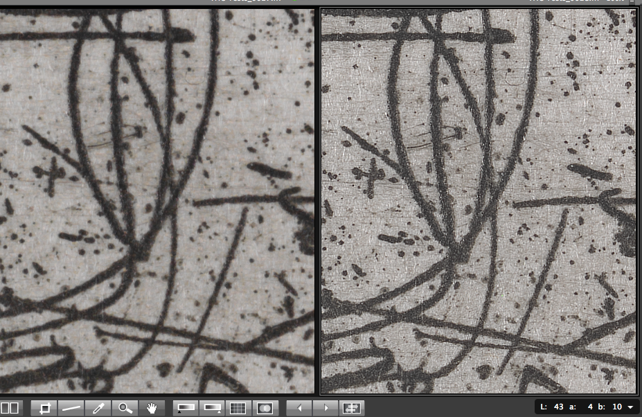

Imaging hardware
Imaging hardware
- Learn about:
- Mosaicing v single shot cameras
- Testing the relative performance of different imaging solutions
- On different brands of studio flash
- On colour profiles and different cameras
- On Hasselblad lenses and imaging whole drawers
- On microscope cameras
- On batteries
- On external and internal flashes
- Sensor to subject distance and magnification
- Case study: Equipment Options for Imaging by Volunteers
Mosaicing v single shot cameras
High quality images can be produced in one of two ways:
- by creating a mosaic of multiple images, or
- using a single image.
Most people and organisations use single image cameras. However, the Australian National Insect Collection (ANIC) chose to use a mosaicing or scanning imaging system— SatScan—to image whole drawers of insects.
SatScan technology, like all mosaic-based cameras, is founded on the principle of dividing an image into multiple individually digitised segments that are recombined into a single seamless image. This offers the advantage of reduced parallax error and high resolution scans from a lower resolution camera. It thus combines attributes of a scanning camera with stitching technology—mosaicing.
Scanning backs adapted to film cameras produced the first very high quality digital images that exceeded film based photography. However, few scanning backs are still produced. Better Light, who were pioneers in this field, have recently ceased production of their scanning backs, and Phase One replaced their scanning backs with single shot medium format backs many years ago.
The use of single shot cameras in cultural institutions has resulted in significantly improved production efficiencies and ease of operation without reducing image quality. Recent developments in digital photography that favour the stacking of focus and exposure differences, and panoramic scanning, almost always employ single shot cameras, not scanning technology.
To improve image quality, some manufacturers, eg Hasselblad allow the option of creating an image from multiple exposures, usually four or six. Each exposure is taken through a red, green or blue filter, and the resulting colour separations are digitally combined to produce the final image. This image is of much higher quality than a single exposure taken with the same camera. However, any optical or structural vibration between the multiple exposures rapidly reduces image resolution instead of increasing it as intended.
The following image shows the difference between a single (left) and multi-shot image (right), using a Hasselblad H3D-50MS (50 mpx) camera.
|  |
{kind=link}
Content contributed by Les Walkling and Bryan Kalms.
Testing the relative performance of different imaging solutions
Often the choice of one camera, lens or other accessory over another is not easily made. To assist in this decision you should test each option under the same conditions. At a minimum, for photographing specimens, the camera/lens should be mounted on a rigid copy stand and the specimens illuminated with diffused electronic flash heads.
When evaluating the relative performance of each camera/lens consider:
- ease of operation—important if volunteers are to use the equipment
- final resolution of the image—verify it against scientific identifiers
- dynamic range of the image, relative to the specimen
- efficiency of the set up, eg how many images per hour
- parallax error—consistent with the purpose of the image
Content contributed by Les Walkling and Bryan Kalms.
On different brands of studio flash
ProFoto, BronColor, Bowens and Elinchrom 240 volt flash units are superb and well supported and serviced in Australia. There are significant differences in price and functionality between different units. Points of difference to consider are:
- colour temperature consistency across a wide range of f-stops
- choice of light shapers (diffusers, reflectors and light boxes)
- correlation between the modelling lamp and flash tube.
For example, ProFoto flash heads house the flash tube along with the modelling lamp in a frosted glass diffuser. This equalises the distribution of the modelling and flash lamps providing a good correlation between the illumination of the modelling (visual) and flash (capture) appearance.
Content contributed by Les Walkling.
On colour profiles and different cameras
PhaseOne backs benefit from a lighting-specific custom camera profile. This results in significantly better colorimetric accuracy than can usually be obtained with a generic camera profile.
The Hasselblad system appears to be more finely tuned in the factory before shipping to their generic Hasselblad RGB profile (included with Hasselblad’s Phocus software). Hasselblad HD3/4 cameras consequently produce quite remarkable colour consistency from camera to camera with the generic Hasselblad RGB profile. Of course, a lighting-specific custom profile that accounts for the exposing light source produces even more accurate colorimetric reproduction on the Hasselblad, or any other camera system.
Content contributed by Les Walkling.
On Hasselblad HC lenses and imaging whole drawers
The HC 120 mm lens covers a field of view of 26º (longest side), while the HC 80 mm lens covers 38º (longest side) and HC 50 mm lens covers 59º (longest side).
In order to cover a 500 mm long drawer (longest side) the nodal point of each lens needs to be placed the following distances from the specimen/tray:
- HC 120 mm = 1083 mm
- HC 80 mm = 726 mm
- HC 50 mm = 442 mm
While the HC 80 mm lens would appear a good compromise with reduced parallax error, its optical performance, though very good at infinity and intermediate magnifications, is not in the same class as the HC 120 mm at closer distances (higher magnification).
The optical performance of the current 50 mm lens is also not suitable for close up work. It remains to be seen how good the HC 50 mm Mark II lens is when it become available early in 2011. In the meantime, we know the HC 120 mm lens is superb and remains the preferred option for such work. In addition to its optical superiority, the HC 120 mm lens also focuses to 1:1 magnification which, when mounted on a copy stand that can accommodate this range of magnifications, significantly increases overall functionality. Its optical performance is also superb at 1: ∞. Therefore, a single HC 120 mm lens can cover a very broad range of imaging needs from 1:1 to 1:∞.
Also, the HC 120 mm Mark II lens is said to have a fix for a minor but annoying focusing problem discovered at the National Gallery of Australia, where it can exhibit a slight focus shift between exposures depending on the final direction of lens focus. That is, if the final focus adjustment is in a outward direction (down in a copy stand arrangement) the focusing motor and resulting focus can shift due to minor vibration, but this shift does not happen if the final focus adjustment is in an inward (up) direction because the motor remains tensioned (a function of the motor’s torque). Therefore, the lens position and resulting focus can not slip. This discrepancy has apparently been resolved in the HC 120 mm Mark II lens.
Hasselblad have also announced an upgrade to their current 50 mpx four-shot back to a 200 mpx six-shot back. Testing in Australian collections should commence in February 2011.
Finally, as the camera to specimen distance decreases optical distortion of the specimen increases. Even illumination over large areas also becomes harder to achieve due to increased physical restrictions on the placement of lights, though the Hasselblad software (Phocus can moderate this lighting distribution by incorporating ‘Scene Reference’ data in an image. This is basically an exposure of a white background receiving the same illumination as the specimen, whose brightness and colorimetric values are added and subtracted to the image of the specimen thereby ensuring perfectly even illumination. In other words, automatic ‘dodging and burning’ of the illunination.
Content contributed by Les Walkling.
On microscope cameras
Leica have 5 megapixel (mpx) and 8 mpx camera systems, but they all interpolate their RGB data and don’t supply MTF curves or other data by which the optical quality of processed data can be compared and evaluated. Only Leica’s top of their range DFC500 camera produces non-interpolated data. But as a fit for purpose aid to research and scholarship it is worth exploring the idea of retrofitting existing dissecting microscopes with moderate resolution digital cameras such as the Leica DFC295 camera.
Qimaging’s Go–21 camera employs a four shot sub-pixel movement of the sensor to produce its 21 mpx images. While Qimaging do not specify it, but with a 5.2 µm pixel pitch the dynamic range of the sensor may be somewhat limited, leading to poor signal to noise response and degraded image quality, at least in some instances.
Content contributed by Les Walkling.
On batteries
AA batteries for flash units should be rechargeable with several chargers. Any imaging workflow based on the use of batteries rather than mains powered and/or power packs needs to include the constant task of swapping in and out different sets of AA batteries. This will have an effect, thought slight, on overall productivity.
Content contributed by Les Walkling.
On external and internal flashes
Slaving Canon 430 EX/480 EX flashes to the Canon 7D built-in flash is only desirable if the built-in flash can be turned off. Otherwise the output of the built-in flash will interfere with optimum lighting of a specimen. This technique is not possible with the Canon 5D and other cameras that do not have a built-in flash. Therefore a flash sync cable from the camera to one of the flash units that can then slave the second flash units is the best practice.
Content contributed by Les Walkling.
Sensor to subject distance and magnification
Calculating sensor to subject distances
The formula to work out the sensor to subject distance for set up and focus is:
Distance (D)= diagonal of the specimen field (F)/tan angle of lens coverage (C)
Examples:
- Canon 100 mm lens angle of coverage C= 23.4º; diagonal of 400 mm x 600 mm drawer F= 721 mm; sensor to drawer distance D= 721/tan 23.4º = 1666 mm
- same lens; insect diagonal view F= 10 mm; sensor to insect distance D= 10/tan 23.4º = 23.1 mm.
With a sub full frame sensor, the angle of lens coverage will decrease proportional to the sensor size, therefore the lens to specimen distance will increase proportionally. For a typical APS sensor the scale factor is x1.6. To cover the same 400 mm x 600 mm area the lens will now need to be 1666 x 1.6 = 2666 mm distant.
With very small specimens, it is useful to realise that when the lens is extended to twice its infinity focal length, an object that is the same distance (twice the infinity focal length) in front of the lens will be in focus and at a magnification ratio of 1:1. In other words, with a 100 mm macro lens extended 200 mm from the sensor, an area the size of the sensor will be in focus 200 mm in front of the lens. Or more precisely, the area in focus will be 200 mm in front of the nodal point of the lens, which usually means that the lens to specimen working distance will be less than 200 mm.
The 100 mm lens with the full frame sensor Canon 5D MkII covers approximately the same field of view as the 60 mm lens on an APS-C sensor Canon 7D. If most of the work will be in the 1:1 to 1:10 magnification range, the 100 mm lens will have the benefit of greater working distances between the lens and specimen.
Calculating subject magnification
To calculate the magnification of the subject use this formula:
Magnification (M) = lens to subject distance (D)/lens to sensor distance (S) = D/S
Hence, M = 1 (1:1) when D = S, but when M = 10 (1:10) the lens to subject distance (D) will be 10 times the lens to sensor distance (S). In terms of specimen size, this equates to the range from sensor size (1:1) to 100x sensor size (10x width x 10x height).
Content contributed by Les Walkling.
Case study: Equipment options for imaging by volunteers
In December 2010 and January 2011, the South Australian Museum (SAMA) investigated imaging options as part of the scope of work under their ALA supported volunteer digitisation project.
This case study [.pdf 091KB] describes in overview the observations and conclusions developed through that process. It encompasses lessons learned from the experience of Museum Victoria and the Queensland Museum, and reflects strategies adopted to tackle some of the SAMA’s in-house challenges.